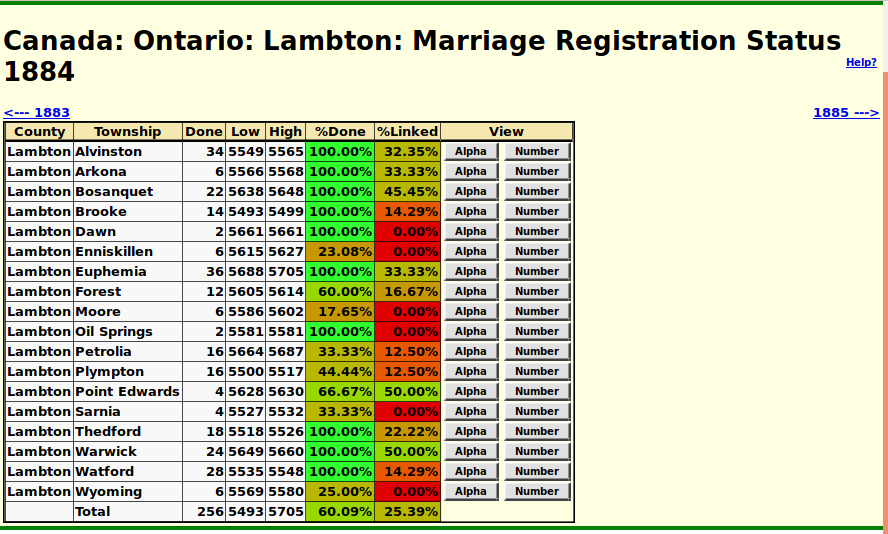

Domain: Marriage Registration Status for County: Help
The associated panel displays an overview of the progress
of the transcription effort for the domain marriage registrations
for a particular county within a particular year.

For convenience there are arrow links for proceding directly to
the status summary for the preceding and following years.
For each town, township, or city in the county this page displays:
- The county name.
- The town, township, or city name.
- the number of individuals for whom marriage
registrations have been transcribed. To be considered as
transcribed at least the date of the marriage has
been transcribed.
- The lowest registration number in the township.
- The highest registration number in the township.
Note that sometimes the registrations are not contiguous
in number.
- The percentage of those registrations that have been
transcribed.
These cells are color-coded to visually indicate the degree of
completeness, from dark red for townships where there are no
records transcribed through bright green for townships where
all of the marriages have been linked.
- The percentage of those transcriptions that have been
linked to corresponding records in the family tree.
These cells are color-coded to visually indicate the degree of
completeness, from dark red for townships where there are no
links to the database through bright green for townships where
all of the marriages have been linked.
- Clicking on the Alpha button
displays a
summary of the transcriptions for that
particular townships in alphabetical name by groom.
- Clicking on the Number button
displays a
summary of the transcriptions for that
particular townships in order by registration number